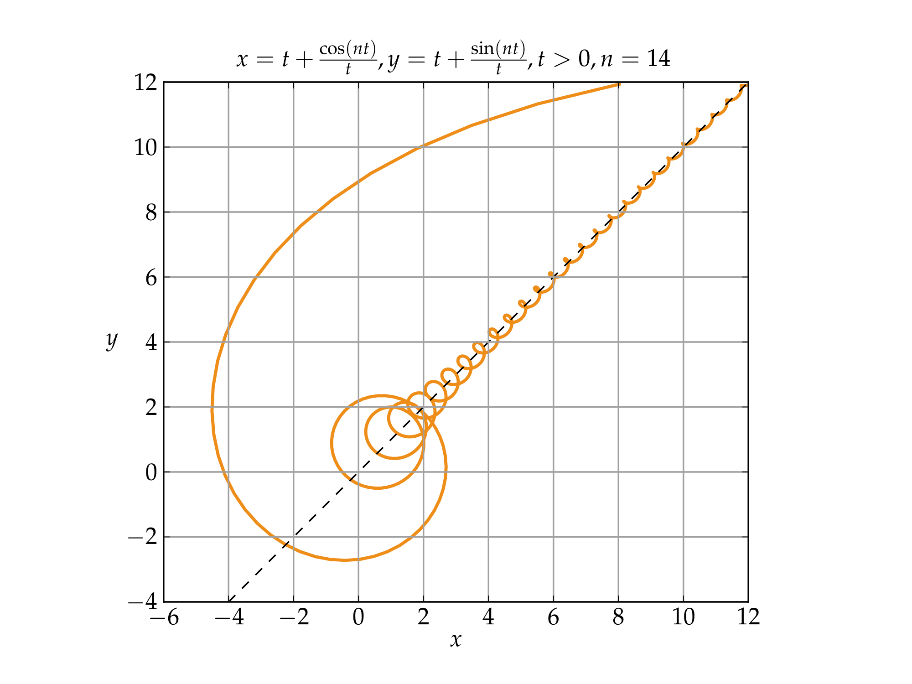

Davis was trained as a Historian at McMaster University, and as an Infantry soldier in the Canadian Forces. An author, strategist, Catholic medievalist, and an entrepreneur, his writing can be found at Stares at the World.


In this article, I’d like to discuss the strategic differences between pursuing a woman for sex versus pursuing her for marriage. In particular, I want to talk about how excelling at the former can lead young men (and women) into a trap of being a perpetual “fuckboy” (or carousel rider). When you start playing the game for the sake of the game—and forget why you started playing it in the first place—endless casual relationships are the result.
If we’re going to hold on to Western civilization—if we’re ever going to see a return of kings—it is up to us to rise above the current state of affairs and become patriarchs who raise the next generation properly, in healthy marriages. But to understand where game went wrong, we need to understand where it went right.
David Givens, an anthropologist, and Timothy Perper, a biologist, have spent hundreds of hours studying couples in bars, confirming what RoK men already know in their bones: that the most successful pickups happen when the woman initiates. To the casual observer, this seems counter-intuitive. After all, it’s the men who approach the women; active masculinity working on passive femininity.
But what Givens and Perper noted was that even though men played the active role, the most successful approaches came only after the women had pre-selected them with flirtatious eye-contact. In other words, seduction—from the Latin se + ducere, “to lead astray”—is anything but.
All the more intelligent women that I know, indeed, are unanimously of the opinion that no girl in her right sense has ever been actually seduced since the world began. — H.L. Mencken, In Defense of Women
The man who excels at game isn’t tricking women into sleeping with him: he’s finding the women who want causal sex and presenting himself as a man who’s offering it good and hard.

The problem with this is summed up by the acronym TANSTAAFL: There Ain’t No Such Thing As A Free Lunch.
Both participants are presenting themselves as something they aren’t. The woman is selling herself as a fun time gal, offering free, no obligation sex for a man who meets her criteria. Simultaneously, she’s also presenting herself as territory to be conquered; she don’t need no man, and she certainly won’t admit to having initiated things with her glance. She never asked for your attention. You just came over and raided the free buffet.
For his part, the man is pretending to be half clown and half psychopath. On the one hand, he’s dancing around for her amusement. On the other, he’s utterly indifferent to her and is incapable of having his feelings hurt by rejection. Both parties are feigning disinterest and emotional invulnerability.
To a certain degree, this is just how social interaction works: we feign disinterest as we test out the waters, so that plausible deniability can smooth over hurt feelings. But with the ongoing erosion of social mores and the deregulation of the sexual market, the game moves to the extreme. It can be summarized as:
1. Adopt the swagger of a fuckboy.
2. Find a woman who’s making eye contact.
3. Dance like a monkey to entertain her.
4. Have sex.
5. Deny that either of you have any emotional investment.
Our personas—the “best face” we show to the world—are mutating into narcissistic shells: fake personalities which we wear like the masks in Eyes Wide Shut. The result is summed up by the Salon writer Tracy Clark-Forty in her article “What Happened When I Had Sex With My Favorite Porn Star“:
It’s exactly what I had breathlessly watched him do many times before, but this time it seemed mechanical and theatrical. Instead of being entertained, I was doing the entertaining, and I suspect he was too — but for whom, exactly? We were the only audience.
All of which is to say: It was like nearly every casual hookup I’ve ever had. Here were two strangers connected only by their fantasies of who the other was.
Note that this article was written in 2012. Since then, the narcissistic shells have grown even more exaggerated, to the point where #MeToo women brag about shutting down famous men under the guise of calling out rape.
Despite the bulk of society spinning off into narcissistic delusion, there is a growing minority who are seeking out the love and stability of traditional social norms. Here we are running into two major stumbling blocks.
First, that the marketplace is overrun with thots and Chads. It is a case of Gresham’s Law (bad money chases out good) applied to the sexual market. It’s even present in churches. Instead of sex, religious thots offer the chance of dating a “righteous” woman, and instead of performing coitus for an imaginary audience, the two of you perform acts of false piety. The women domineer, the men sneak and manipulate.
The second is that we’ve forgotten what a healthy relationship looks like. The man who has mastered the skill of spotting thots—or the woman who only has eyes for Chad—won’t be able to see the decent man or woman in front of them. Similarly, when you’ve mastered playing the clown (or the bitchy sex slut), it’s hard to break out of that mold and exemplify what your sex is supposed to be.
A word of caution: far too many young people see the thots and Chads, and in rejecting them, they reject virility itself. The men become soyboys and the women become born-again virgins, who don’t do that icky stuff anymore. This is the mirror extreme of the Chad/thot dynamic, and it’s equally unstable.
We need to develop new eyes for seeing one another, eyes that see beyond the immediate and look into the future. Chad knows how to spot the woman who’s looking for sex right now, but he lacks the eyes to see the woman who will be a good mother, who will be faithful, who will be obedient. Similarly, the thot can spot the flashy Chad, but she can’t see the man who would fight to defend her, or slave away to support the family, or be the rock who will comfort her when she cries.
We need to develop four dimensional eyes, and to do that, we need to practice the virtues unique to our sexes. As men, we must develop our strength, fortitude, and stability; women need to focus on their chastity, nurturing, and responsibility. Masculinity engenders femininity and vice versa, and as we grow more virtuous, we become better at spotting virtue in others.
To find a good wife, you must be deserving of a good wife. Boys spend their time chasing skirts (and girls waste theirs seeking attention on Instagram) while men look to build empires. They look for opportunities, allies, and good raw materials with which they can create an edifice which lasts the test of time.
By reorienting our thinking, we recalibrate our vision. There is no simple tactic for finding a good wife, a checklist of attributes which promises a high probability of success; instead it’s about learning to see things as they are, including other people. Keep your eyes open for a woman who would complement your empire, and then when you find her, that’s when you use game the way it was meant to be played.